2.1 Deriving the posterior using Bayes’ rule: An analytical example
Recall our cloze probability example earlier. Participants are shown sentences like
“It’s raining. I’m going to take the …”
Ten participants are asked to complete the sentence. If \(8\) out of \(10\) participants complete the sentence with “umbrella,” the estimated cloze probability or predictability (given the preceding context) would be \(\frac{8}{10}=0.8\). This is the maximum likelihood estimate of the probability of producing this word; we will designate the estimate with a “hat” on the parameter name: \(\hat \theta=0.8\).
Notice an important point here: one shortcoming of simply writing down the proportion in this way is that it ignores the uncertainty of our measurement: \(0.8\) could come from \(10\) participants (\(\frac{8}{10}\)), \(100\) participants (\(\frac{80}{100}\)), or \(100,000\) participants (\(\frac{80000}{100000}\)). The uncertainty of the estimate \(0.8\) is different in each of these cases, and that is very relevant when drawing conclusions from data.
In the frequentist framework, the only thing we can characterize our uncertainty about is the sampling distribution of this parameter under imaginary repeated sampling; we can never talk about our uncertainty about the parameter’s true value itself. Thus, for a sample size of \(10\), our uncertainty of the sampling distribution would be computed by calculating the sample variance \(\sigma^2\) (here, \(n\times \hat\theta(1-\hat\theta)= 10\times 0.8 \times (1-0.8)=1.6\)), and then calculating the standard error: \(\sigma/\sqrt{n}=0.4\). Increasing the sample size will make this standard error smaller and smaller for the same estimated proportion of successes of \(0.8\). This increased precision is a statement about the uncertainty of the sampling distribution of \(\theta\) under imaginary repeated sampling; it is not an estimate of the uncertainty of \(\theta\) itself.
The Bayesian framework gives us the opportunity to talk directly about our uncertainty of the parameter itself, given the data. This is achieved by obtaining the posterior distribution of the parameter using Bayes’ rule, as we show below.
2.1.1 Choosing a likelihood
Under the assumptions we have set up above, the responses follow a Binomial distribution, and so the PMF can be written as follows.
\[\begin{equation} p(k|n,\theta) = \binom{n} {k} \theta^k (1-\theta)^{n-k} \tag{2.3} \end{equation}\]
where \(k\) indicates the number of times “umbrella” is given as an answer, and \(n\) the total number of answers given.
In a particular experiment that we carry out, if \(n=10\) and \(k = 8\), these data are now a fixed quantity. The PMF above now becomes a function of \(\theta\), the likelihood function:
\[\begin{equation} p(k=8 | n= 10, \theta) = \binom{n}{k} \theta^8 (1-\theta)^{2} \end{equation}\]
The above function is a now a continuous function of the value \(\theta\), which has possible values ranging from 0 to 1. Compare this to the PMF of the Binomial, which treats \(\theta\) as a fixed value and defines a discrete distribution over the n+1 possible discrete values \(k\) that we can observe (the possible number of successes).
Recall that the PMF and the likelihood are the same function seen from different points of view. The only difference between the two is what is considered to be fixed and what is varying. The PMF treats data as varying from experiment to experiment and \(\theta\) as fixed, whereas the likelihood function treats the data as fixed and the parameter \(\theta\) as varying.
We now turn our attention back to our main goal, which is to find out, using Bayes’ rule, the posterior distribution of \(\theta\) given our data: \(p(\theta|n,k)\). In order to use Bayes’ rule to calculate this posterior distribution, we need to define a prior distribution over the parameter \(\theta\). In doing so, we are explicitly expressing our prior uncertainty about plausible values of \(\theta\).
2.1.2 Choosing a prior for \(\theta\)
For the choice of prior for \(\theta\) in the Binomial distribution, we need to assume that the parameter \(\theta\) is a random variable that has a PDF whose range lies within [0,1], the range over which \(\theta\) can vary (this is because \(\theta\) represents a probability). The Beta distribution, which is a PDF for a continuous random variable, is commonly used as prior for parameters representing probabilities. One reason for this choice is that its PDF ranges over the interval \([0,1]\). The other reason for this choice is that it makes the Bayes’ rule calculation remarkably easy.
The Beta distribution has the following PDF.
\[\begin{equation} p(\theta|a,b)= \frac{1}{B(a,b)} \theta^{a - 1} (1-\theta)^{b-1} \tag{2.4} \end{equation}\]
The term \(B(a,b)\) expands to \(\int_0^1 \theta^{a-1}(1-\theta)^{b-1}\, d\theta\), and is a normalizing constant that ensures that the area under the curve sums to one.5
The Beta distribution’s parameters \(a\) and \(b\) can be interpreted as expressing our prior beliefs about the probability of success; \(a\) represents the number of “successes”, in our case, answers that are “umbrella” and \(b\) the number of failures, the answers that are not “umbrella”. Figure 2.1 shows the different Beta distribution shapes given different values of \(a\) and \(b\).
 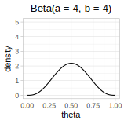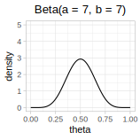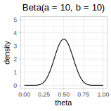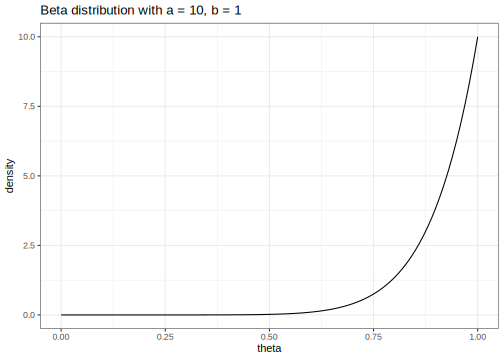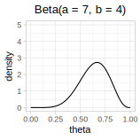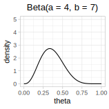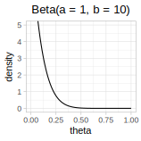
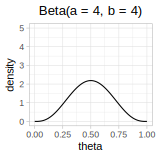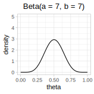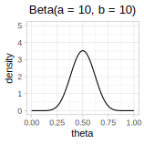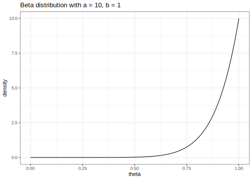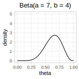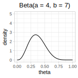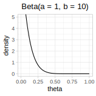
FIGURE 2.1: Examples of Beta distributions with different parameters.
As in the Binomial and Normal distributions that we saw in chapter 1, one can analytically derive the formulas for the expectation and variance of the Beta distribution. These are:
\[\begin{equation} \operatorname{E}[X] = \frac{a}{a+b} \quad \operatorname{var}(X)=\frac {a \cdot b }{(a + b )^{2}(a + b +1)} \tag{2.5} \end{equation}\]
As an example, choosing \(a=4\) and \(b=4\) would mean that the answer “umbrella” is as likely as a different answer, but we are relatively unsure about this. We could express our uncertainty by computing the region over which we are 95% certain that the value of the parameter lies; this is the 95% credible interval. For this, we would use the qbeta function in R; the parameters \(a\) and \(b\) are called shape1 and shape2 in R.
## [1] 0.18 0.82If we were to choose \(a=10\) and \(b=10\), we would still be assuming that a priori the answer “umbrella” is just as likely as some other answer, but now our prior uncertainty about this mean is lower, as the 95% credible interval computed below shows.
## [1] 0.29 0.71In Figure 2.1, we can see also the difference in uncertainty in these two examples graphically.
Which prior should we choose? In a real data analysis problem, the choice of prior would depend on what prior knowledge we want to bring into the analysis. If we don’t have much prior information, we could use \(a=b=1\); this gives us a uniform prior. This kind of prior goes by various names: non-informative prior, or uninformative prior. By contrast, if we have a lot of prior knowledge and/or a strong belief (e.g., based on a particular theory’s predictions, or prior data) that \(\theta\) has a particular range of plausible values, we can use a different set of a,b values to reflect our belief about the parameter. Notice in the above example that the larger our parameters a and b, the narrower the spread of the distribution; i.e., the lower our uncertainty about the mean value of the parameter.
For the moment, just for illustration, we choose the values \(a=4\) and \(b=4\) for the Beta prior. Then, our prior for \(\theta\) is the following Beta PDF:
\[\begin{equation} p(\theta) = \frac{1}{B(4,4)} \theta^{3} (1-\theta)^{3} \end{equation}\]
Having chosen a likelihood, and having defined a prior on \(\theta\), we are ready to carry out our first Bayesian analysis to derive a posterior distribution for \(\theta\).
2.1.3 Using Bayes’ rule to compute the posterior \(p(\theta|n,k)\)
Having specified the likelihood and the prior, we will now use Bayes’ rule to calculate \(p(\theta|n,k)\). Using Bayes’ rule simply involves replacing the Likelihood and the Prior we defined above into the equation we saw earlier:
\[\begin{equation} \hbox{Posterior} = \frac{\hbox{Likelihood} \cdot \hbox{Prior}}{\hbox{Marginal Likelihood}} \end{equation}\]
Replace the terms for likelihood and prior into this equation:
\[\begin{equation} p(\theta|n=10,k=8) = \frac{\left[\binom{10}{8} \theta^8 \cdot (1-\theta)^{2}\right] \times \left[\frac{1}{B(4,4)} \times \theta^{3} (1-\theta)^{3}\right]}{p(k=8)} \tag{2.6} \end{equation}\]
where \(p(k=8)\) is \(\int_{0}^1 p(k=8|n,\theta) p(\theta)\, d\theta\). This term will be a constant once the number of successes \(k\) is known; this is the marginal likelihood we encountered in chapter 1. In fact, once \(k\) is known, there are several constant values in the above equation; they are constants because none of them depend on the parameter of interest, \(\theta\). We can collect all of these together:
\[\begin{equation} p(\theta|n=10,k=8) = \left[ \frac{\binom{10}{8}}{B(4,4)\times p(k=8)} \right] [\theta^8 (1-\theta)^{2} \times \theta^{3} (1-\theta)^{3}] \tag{2.7} \end{equation}\]
The first term that is in square brackets, \(\frac{\binom{10}{8}}{B(4,4)\times p(k=8)}\), is all the constants collected together, and is the normalizing constant we have seen before; it makes the posterior distribution \(p(\theta|n=10,k=8)\) sum to one. Since it is a constant, we can ignore it for now and focus on the two other terms in the equation. Because we are ignoring the constant, we will now say that the posterior is proportional to the right-hand side.
\[\begin{equation} p(\theta|n=10,k=8) \propto [\theta^8 (1-\theta)^{2} \times \theta^{3} (1-\theta)^{3} ] \tag{2.8} \end{equation}\]
A common way of writing the above equation is:
\[\begin{equation} \hbox{Posterior} \propto \hbox{Likelihood} \times \hbox{Prior} \end{equation}\]
Resolving the right-hand side now simply involves adding up the exponents! In this example, computing the posterior really does boil down to this simple addition operation on the exponents.
\[\begin{equation} p(\theta|n=10,k=8) \propto [\theta^{8+3} (1-\theta)^{2+3}] = \theta^{11} (1-\theta)^{5} \tag{2.9} \end{equation}\]
The expression on the right-hand side corresponds to a Beta distribution with parameters \(a=12\), and \(b=6\). This becomes evidence if we rewrite the right-hand side such that it represents the core part of a Beta PDF (see equation (2.4)). All that is missing is a normalizing constant which would make the area under the curve sum to one.
\[\begin{equation} \theta^{11} (1-\theta)^{5} = \theta^{12-1} (1-\theta)^{6-1} \end{equation}\]
This core part of any PDF or PMF is called the kernel of that distribution. Without a normalizing constant, the area under the curve will not sum to one. Let’s check this:
## [1] 0.000013So the area under the curve (AUC) is not 1—the posterior that we computed above is not a proper probability distribution.
All that is needed to make this into a proper probability distribution is to include a normalizing constant, which, according to the definition of the Beta distribution, would be \(B(12,6)\). This term is in fact the integral we computed above.
\[\begin{equation} p(\theta|n=10,k=8) = \frac{1}{B(12,6)} \theta^{12-1} (1-\theta)^{6-1} \end{equation}\]
Now, this function will sum to one:
PostFun<-function(theta){
theta^11 * (1-theta)^5/AUC
}
round(integrate(PostFun,lower=0,upper=1)$value,2)## [1] 12.1.4 Summary of the procedure
To summarize, we started with a Binomial likelihood, multiplied it with the prior \(\theta \sim Beta(4,4)\), and obtained the posterior \(p(\theta|n,k) \sim Beta(12,6)\). The constants were ignored when carrying out the multiplication; we say that we computed the posterior up to proportionality. Finally, we showed how, in this simple example, the posterior can be rescaled to become a probability distribution, by including a proportionality constant.
The above example is a case of a conjugate analysis: the posterior on the parameter has the same form as the prior. The above combination of likelihood and prior is called the Beta-Binomial conjugate case. There are several other such combinations of Likelihoods and Priors that yield a posterior that has the same PDF as the prior on the parameter; some examples will appear in the exercises.
Formally, conjugacy is defined as follows:
DEFINITION Given the likelihood \(p(y| \theta)\), if the prior \(p(\theta)\) results in a posterior \(y(\theta|y)\) that has the same form as \(p(\theta)\), then we call \(p(\theta)\) a conjugate prior.
For the Beta-Binomial case, we can derive a very general relationship between the likelihood, prior, and posterior. Given the Binomial likelihood up to proportionality (ignoring the constant) \(\theta^k (1-\theta)^{n-k}\), and given the prior, also up to proportionality, \(\theta^{a-1} (1-\theta)^{b-1}\), their product will be:
\[\begin{equation} \theta^k (1-\theta)^{n-k} \theta^{a-1} (1-\theta)^{b-1} = \theta^{a+k-1} (1-\theta)^{b+n-k-1} \end{equation}\]
Thus, given a \(Binomial(n,k|\theta)\) likelihood, and a \(Beta(a,b)\) prior on \(\theta\), the posterior will be \(Beta(a+k,b+n-k)\).
2.1.5 Visualizing the prior, likelihood, and the posterior
We established in the example above that the posterior is a Beta distribution with parameters \(a=12\), and \(b = 6\). We visualize the likelihood, prior, and the posterior alongside each other in 2.2.
## Warning: `mapping` is not used by stat_function()
## Warning: `mapping` is not used by stat_function()
## Warning: `mapping` is not used by stat_function()FIGURE 2.2: The likelihood, prior, and posterior in the Beta-Binomial example.
We can summarize the posterior distribution either graphically as we did above, or summarize it by computing the mean and the variance. The mean gives us an estimate of the Cloze probability of producing “umbrella” in that sentence (given the model, i.e., given the likelihood and prior):
\[\begin{equation} \operatorname{E}[\hat\theta] = \frac{12}{12+6}=0.67 \tag{2.10} \end{equation}\]
\[\begin{equation} \operatorname{var}[\hat\theta]=\frac {12 \cdot 6 }{(12 + 6 )^{2}(12 + 6 +1)}= .01 \tag{2.11} \end{equation}\]
We could also display the 95% credible interval, the range over which we are 95% certain the true value of \(\theta\) lies, given the data and model.
## [1] 0.44 0.86Typically, we would summarize the results of a Bayesian analysis by displaying the posterior distribution of the parameter (or parameters) graphically, along with the above summary statistics: the mean, the standard deviation or variance, and the 95% credible interval. You will see many examples of such summaries later.
2.1.6 The posterior distribution is a compromise between the prior and the likelihood
Just for the sake of illustration, let’s take four different Beta priors, each reflecting increasing certainty.
- Beta(a=2,b=2)
- Beta(a=3,b=3)
- Beta(a=6,b=6)
- Beta(a=21,b=21)
Each prior reflects a belief that \(\theta=0.5\), with varying degrees of (un)certainty. Given the general formula we developed above for the Beta-Binomial case, we just need to plug in the likelihood and the prior to get the posterior:
\[\begin{equation} p(\theta | n,k) \propto p(k |n,\theta) p(\theta) \end{equation}\]
The four corresponding posterior distributios would be:
\[\begin{equation} p(\theta\mid k,n) \propto [\theta^{8} (1-\theta)^{2}] [\theta^{2-1}(1-\theta)^{2-1}] = \theta^{10-1} (1-\theta)^{4-1} \end{equation}\]
\[\begin{equation} p(\theta\mid k,n) \propto [\theta^{8} (1-\theta)^{2}] [\theta^{3-1}(1-\theta)^{3-1}] = \theta^{11-1} (1-\theta)^{5-1} \end{equation}\]
\[\begin{equation} p(\theta\mid k,n) \propto [\theta^{8} (1-\theta)^{2}] [\theta^{6-1}(1-\theta)^{6-1}] = \theta^{14-1} (1-\theta)^{8-1} \end{equation}\]
\[\begin{equation} p(\theta\mid k,n) \propto [\theta^{8} (1-\theta)^{2}] [\theta^{21-1}(1-\theta)^{21-1}] = \theta^{29-1} (1-\theta)^{23-1} \end{equation}\]
We can easily visualize each of these triplets of priors, likelihoods and posteriors. Use the Shiny app embedded below to visualize these different prior-likelihood combinations and look at the posterior in each case.
## this is just a placeholder for the relevant shinyapp:
knitr::include_app("https://vasishth.shinyapps.io/AppTypeIPower",
height = "500px")If you hold the likelihood function constant (held constant at \(n=10, k=8\) in the above example), the tighter the prior, the greater the extent to owhichh the posterior orients itself towards the prior. In general, we can say the following about the likelihood-prior-posterior relationship:
- The posterior distribution is a compromise between the prior and the likelihood.
- For a given set of data, the greater the certainty in the prior, the more heavily the posterior will be influenced by the prior mean.
- Conversely, for a given set of data, the greater the uncertainty in the prior, the more heavily the posterior will be influenced by the likelihood.
Another important observation emerges if we increase the sample size from \(10\) to, say, \(1,000,000\). Suppose we still get a sample mean of \(0.8\) here, so that \(k=800,000\). Now, the posterior mean will be influenced almost entirely by the sample mean. This is because, in the general form for the posterior \(Beta(a+k,b+n-k)\) that we computed above, the \(n\) and \(k\) become very large relative to the a, b values, and dominate in determining the posterior mean.
Whenever we do a Bayesian analysis, it is good practice to check whether the parameter you are interested in estimating is sensitive to the prior specification. Such an investigation is called a sensitivity analysis. Later in this book, we will see many examples of sensitivity analyses in realistic data-analysis settings.
2.1.7 Incremental knowledge gain using prior knowledge
In the above example, we used an artificial example where we asked \(10\) participants to complete the sentence shown at the beginning of the chapter, and then we counted the number of times that they produced “umbrella” vs. some other word as a continuation. Given 8 instances of “umbrella”, and using a \(Beta(4,4)\) prior, we derived the posterior to be \(Beta(12,6)\). We could now use this posterior as our prior for the next study. Suppose that we were to carry out a second experiment, again with 10 participants, and this time \(6\) produced “umbrella”. We could now use our new prior (Beta(12,6)) to obtain an updated posterior. We have \(a=12, b=6, n=10, k=6\). This gives us as posterior: \(Beta(a+k,b+n-k) = Beta(12+6,6+10-6)=Beta(18,10)\).
Now, if we were to pool all our data that we have from the two experiments, then we would have as data \(n=20, k=14\). Suppose that we keep our initial prior of \(a=4,b=4\). Then, our posterior would be \(Beta(4+14,4+20-14)=Beta(18,10)\). This is exactly the same posterior that we got when first analyzed the first \(10\) participants’ data, derived the posterior, and then used that posterior as a prior for the next \(10\) participants’ data.
This toy example illustrates an important point that has great practical importance for cognitive science. One can incrementally gain information about a research question by using information from previous studies and deriving a posterior, and then use that posterior as a prior. For practical examples from psycholinguistics showing how information can be pooled from previous studies, see Jäger, Engelmann, and Vasishth (2017) and Nicenboim, Roettger, and Vasishth (2018). Vasishth and Engelmann (2020) illustrates an example of how the posterior from a previous study or collection of studies can be used to compute the posterior derived from new data. We return to this point in later chapters.
References
Jäger, Lena A., Felix Engelmann, and Shravan Vasishth. 2017. “Similarity-Based Interference in Sentence Comprehension: Literature review and Bayesian meta-analysis.” Journal of Memory and Language 94: 316–39. https://doi.org/https://doi.org/10.1016/j.jml.2017.01.004.
Nicenboim, Bruno, Timo B. Roettger, and Shravan Vasishth. 2018. “Using Meta-Analysis for Evidence Synthesis: The case of incomplete neutralization in German.” Journal of Phonetics 70: 39–55. https://doi.org/https://doi.org/10.1016/j.wocn.2018.06.001.
Vasishth, Shravan, and Felix Engelmann. 2020. “Sentence Comprehension as a Cognitive Process: A Computational Approach.” https://vasishth.github.io/sccp/.
In some textbooks, you may see the PDF of the Beta distribution with the normalizing constant \(\frac{\Gamma(a+b)}{\Gamma(a)\Gamma(b)}\) (the expression \(\Gamma(n)\) is defined as (n-1)!): \[p(\theta|a,b)= \frac{\Gamma(a+b)}{\Gamma(a)\Gamma(b)} \theta^{a - 1} (1-\theta)^{b-1}\] These two statements for the Beta distribution are identical because \(B(a,b)\) can be shown to be equal to \(\frac{\Gamma(a)\Gamma(b)}{\Gamma(a+b)}\).↩